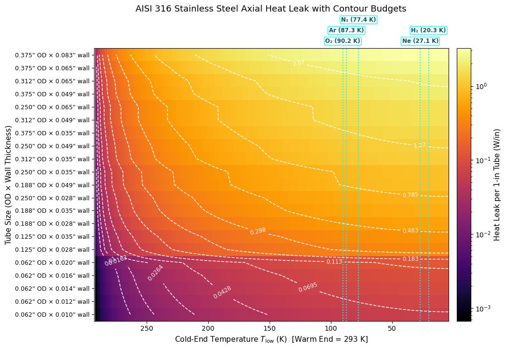

Code
#Load all of the libraries
import numpy as np
import pandas as pd
import matplotlib.pyplot as plt
import os, sys
from scipy.integrate import quadThis notebook shows common dimensions of SS Swagelok tubing and estimates steady-state heat conducted down the length of a 316 stainless steel tube, from a warm end to a cold end. Often times in cryogenic gas systems, SS tubing is used to traverse a cryostat from room temperature down to cryogenic temperatures. Estimating the heat load can be useful to figure out if you need more tubing length or a smaller diameter to reduce heat loads on the cryostat, or if you need more tubing volume you can figure out how much additional heat load you might apply to the cryostat.
Here we use the NIST cryogenic thermal-conductivity curve fit for the specific metal. NIST has some great publications and a resources on cryogenic properties of common materials. Solids are accessible on the website, and liquids/gases can be accessed through the RefProp software package, which is similar to CoolProp.
#Load all of the libraries
import numpy as np
import pandas as pd
import matplotlib.pyplot as plt
import os, sys
from scipy.integrate import quadOften times, when designing or operating low volume gas handling systems, knowing the volume per unit length of tube can be useful. This section reads the tubing data for Swagelok 316SS tubing (Tabel 3 - Fractional Stainless Steel Seamless Tubing), adds tubing volume (cc) per inch length and inch length per unit volume (cc). Calcuating volume (cc) per inch length is as simple as multiplying the tube cross-section by the unit conversion cubed.
\[\frac{Vol [cc]}{Len [in]} = \frac{\pi \cdot (OD[in] - 2*thk[in])^2}{4} \cdot (2.54\frac{[cm]}{[in]})^3\]
from fractions import Fraction
tubes = pd.read_csv("SwagelokTubeSizes.csv", header=[0, 1])
tubes[("ID","in")] = tubes[("OD","in")] - tubes[("Wall","in")]
#tubing volume per inch of length
#tubing length per cc of volume
tubes[("vol_len","cc/in")] = np.pi/4*(tubes[("OD","in")] - 2*tubes[("Wall","in")])**2 * (2.54)**3
tubes[("len_vol","in/cc")] = 1/tubes[("vol_len","cc/in")]
tubes[("OD","in")] = tubes[("OD","in")].apply(lambda x: Fraction(x).limit_denominator(16))
tubes[("Ax_gas","in^2")] = np.pi/4*(tubes[("OD","in")] - 2*tubes[("Wall","in")])**2
tubes[("Ax_metal","in^2")] = np.pi/4*(tubes[("OD","in")]**2 - tubes[("ID","in")]**2)
tubes.round(3)| OD | Wall | Pressure | ID | vol_len | len_vol | Ax_gas | Ax_metal | |
|---|---|---|---|---|---|---|---|---|
| in | in | psig | in | cc/in | in/cc | in^2 | in^2 | |
| 0 | 1/16 | 0.010 | 5,600 | 0.052 | 0.023 | 43.016 | 0.001419 | 0.000903 |
| 1 | 1/16 | 0.012 | 6,800 | 0.050 | 0.019 | 52.419 | 0.001164 | 0.001065 |
| 2 | 1/16 | 0.014 | 8,100 | 0.048 | 0.015 | 65.279 | 0.000935 | 0.001221 |
| 3 | 1/16 | 0.016 | 9,400 | 0.046 | 0.012 | 83.524 | 0.000731 | 0.00137 |
| 4 | 1/16 | 0.020 | 12,000 | 0.042 | 0.007 | 153.477 | 0.000398 | 0.001649 |
| 5 | 1/8 | 0.028 | 8,500 | 0.097 | 0.061 | 16.320 | 0.003739 | 0.004882 |
| 6 | 1/8 | 0.035 | 10,900 | 0.090 | 0.039 | 25.685 | 0.002376 | 0.00591 |
| 7 | 3/16 | 0.028 | 5,400 | 0.160 | 0.223 | 4.493 | 0.013581 | 0.007631 |
| 8 | 3/16 | 0.035 | 7,000 | 0.152 | 0.178 | 5.628 | 0.010843 | 0.009346 |
| 9 | 3/16 | 0.049 | 10,200 | 0.138 | 0.103 | 9.700 | 0.006291 | 0.012546 |
| 10 | 1/4 | 0.028 | 4,000 | 0.222 | 0.484 | 2.064 | 0.029559 | 0.01038 |
| 11 | 1/4 | 0.035 | 5,100 | 0.215 | 0.417 | 2.398 | 0.025447 | 0.012782 |
| 12 | 1/4 | 0.049 | 7,500 | 0.201 | 0.297 | 3.363 | 0.018146 | 0.017357 |
| 13 | 1/4 | 0.065 | 10,200 | 0.185 | 0.185 | 5.396 | 0.01131 | 0.022207 |
| 14 | 5/16 | 0.035 | 4,000 | 0.277 | 0.757 | 1.321 | 0.046186 | 0.016218 |
| 15 | 5/16 | 0.049 | 5,800 | 0.264 | 0.592 | 1.689 | 0.036136 | 0.022167 |
| 16 | 5/16 | 0.065 | 8,000 | 0.248 | 0.429 | 2.333 | 0.026159 | 0.028588 |
| 17 | 3/8 | 0.035 | 3,300 | 0.340 | 1.197 | 0.835 | 0.073062 | 0.019655 |
| 18 | 3/8 | 0.049 | 4,800 | 0.326 | 0.988 | 1.013 | 0.060263 | 0.026978 |
| 19 | 3/8 | 0.065 | 6,500 | 0.310 | 0.773 | 1.294 | 0.047144 | 0.03497 |
| 20 | 3/8 | 0.083 | 7,500 | 0.292 | 0.562 | 1.779 | 0.034307 | 0.04348 |
| 21 | 1/2 | 0.035 | 2,600 | 0.465 | 2.380 | 0.420 | 0.14522 | 0.026527 |
| 22 | 1/2 | 0.049 | 3,700 | 0.451 | 2.080 | 0.481 | 0.126923 | 0.036599 |
| 23 | 1/2 | 0.065 | 5,100 | 0.435 | 1.762 | 0.568 | 0.107521 | 0.047733 |
| 24 | 1/2 | 0.083 | 6,700 | 0.417 | 1.436 | 0.696 | 0.087616 | 0.059777 |
| 25 | 5/8 | 0.049 | 2,900 | 0.576 | 3.574 | 0.280 | 0.218128 | 0.04622 |
| 26 | 5/8 | 0.065 | 4,000 | 0.560 | 3.154 | 0.317 | 0.192442 | 0.060495 |
| 27 | 5/8 | 0.083 | 5,200 | 0.542 | 2.712 | 0.369 | 0.165468 | 0.076074 |
| 28 | 5/8 | 0.095 | 6,000 | 0.530 | 2.435 | 0.411 | 0.148617 | 0.086178 |
| 29 | 3/4 | 0.049 | 2,400 | 0.701 | 5.471 | 0.183 | 0.333876 | 0.055841 |
| 30 | 3/4 | 0.065 | 3,300 | 0.685 | 4.947 | 0.202 | 0.301907 | 0.073258 |
| 31 | 3/4 | 0.083 | 4,200 | 0.667 | 4.390 | 0.228 | 0.267865 | 0.092371 |
| 32 | 3/4 | 0.095 | 4,900 | 0.655 | 4.036 | 0.248 | 0.246301 | 0.104831 |
| 33 | 3/4 | 0.109 | 5,800 | 0.641 | 3.643 | 0.275 | 0.222287 | 0.119081 |
# NIST Type 316 stainless steel thermal conductivity coefficients
project_root = os.path.abspath("..")
if project_root not in sys.path:
sys.path.append(project_root)
from materials import DATABASE
# Define a temperature range from liquid helium (4K) to room temp (300K)
T_MIN_K = 4.0
T_MAX_K = 300.0
T_range = np.linspace(T_MIN_K, T_MAX_K, 100)
tube_material = DATABASE["SS 316"]
# tube_material = DATABASE["Al 6061-T6"]Physical model: one-dimensional, steady-state axial conduction through the metal annular cross-section of a straight tube. The two ends are held at specified temperatures. The model assumes no heat exchange with the surroundings along the tube, no parallel heat paths through fittings/supports, and constant tube dimensions.
Edit the inputs below.
tube_od_in: tube outside diameter, incheswall_thickness_in: wall thickness, inchestube_length_m: axial length between the warm and cold ends, metresT_warm_K, T_cold_K: temperatures at the two ends, kelvinThe metal cross-sectional area conducting heat axially is the annular area:
\(A_m=\frac{\pi}{4}(D_o^2-D_i^2)\)
where \((D_i=D_o-2t)\). This is not the fluid-flow area inside the tube.
# -------- USER INPUTS: EDIT THESE VALUES --------
tube_od_in = 0.1250 # tube outside diameter, inches
wall_thickness_in = 0.028 # wall thickness, inches
tube_length_m = 0.0254 # axial distance between warm and cold ends, metres
T_warm_K = 293.0 # warm-end temperature, kelvin
T_cold_K = 77.0 # cold-end temperature, kelvin
# ------------------------------------------------
IN_TO_M = 0.0254
if tube_od_in <= 0 or wall_thickness_in <= 0:
raise ValueError("OD and wall thickness must be positive.")
if 2 * wall_thickness_in >= tube_od_in:
raise ValueError("Wall thickness leaves no positive internal diameter.")
if tube_length_m <= 0:
raise ValueError("Tube length must be positive.")
if T_warm_K == T_cold_K:
raise ValueError("Warm- and cold-end temperatures must differ.")
if not (T_MIN_K <= T_warm_K <= T_MAX_K and T_MIN_K <= T_cold_K <= T_MAX_K):
raise ValueError("Both end temperatures must be within the NIST 4–300 K data range.")
tube_id_in = tube_od_in - 2*wall_thickness_in
Do_m = tube_od_in * IN_TO_M
Di_m = tube_id_in * IN_TO_M
metal_area_m2 = np.pi/4 * (Do_m**2 - Di_m**2)
print(f"Tube OD: {tube_od_in:.4f} in")
print(f"Tube ID: {tube_id_in:.4f} in")
print(f"Metal cross-sectional area: {metal_area_m2:.6e} m²")
print(f"Axial length: {tube_length_m:.4g} m")
print(f"End temperatures: {T_warm_K:.2f} K and {T_cold_K:.2f} K")Tube OD: 0.1250 in
Tube ID: 0.0690 in
Metal cross-sectional area: 5.504870e-06 m²
Axial length: 0.0254 m
End temperatures: 293.00 K and 77.00 KFor a straight tube with constant metal cross-sectional area and temperature-dependent conductivity:
\(\dot Q=\frac{A_m}{L}\int_{T_c}^{T_h} k(T)\,dT\)
where:
The integral is evaluated numerically. The reported heat leak is a positive magnitude, flowing from the warm end toward the cold end.
def calculate_tubing_heat_leak(
tubes_df,
k_func,
T_low,
T_high,
tube_length_m,
material_label="316SS"
):
"""
Propagates axial conduction heat leak across a multi-header tubing DataFrame.
Parameters:
tubes_df (pd.DataFrame): DataFrame containing ('OD', 'in') and ('ID', 'in').
k_func (callable): Thermal conductivity function k(T) in W/(m-K).
T_low (float): Cold boundary temperature in K.
T_high (float): Warm boundary temperature in K.
tube_length_m (float): Axial length of the tube in meters.
material_label (str): Label for tracking the evaluated material.
Returns:
results_df (pd.DataFrame): Copy of tubes_df with appended heat leak columns.
summary_info (dict): Scalar integration metrics for reference.
"""
# 1. Perform the numerical integration once for the given material & temperature bounds
integral_k_dT, integration_error = quad(
lambda T: k_func(T),
T_low,
T_high,
epsabs=1e-9,
epsrel=1e-8,
)
# 2. Extract OD and ID in inches from the multi-header DataFrame
od_in = tubes_df[("OD", "in")]
id_in = tubes_df[("ID", "in")]
# 3. Calculate annular metal cross-sectional area and convert in² to m²
in2_to_m2 = (0.0254) ** 2
area_in2 = (np.pi / 4.0) * (od_in**2 - id_in**2)
area_m2 = area_in2 * in2_to_m2
# 4. Vectorized heat leak calculations across all tube rows
qdot_W = (area_m2 / tube_length_m) * integral_k_dT
qdot_per_cm = qdot_W / tube_length_m * 100 # Equivalent to area_m2 * integral_k_dT for 1m length
# 5. Build the output DataFrame preserving your MultiIndex structure
results_df = tubes_df[[("OD", "in"), ("Wall", "in")]].copy()
results_df[("Metal Area", "m²")] = area_m2
results_df[(f"Heat Leak ({material_label})", "W")] = qdot_W
results_df[(f"Heat Leak per cm ({material_label})", "W/cm")] = qdot_per_cm
results_df[(f"Heat Leak per in ({material_label})", "W/in")] = qdot_W /tube_length_m /0.0254
# Store scalar integration metrics for verification
summary_info = {
"Material": material_label,
"T_low (K)": T_low,
"T_high (K)": T_high,
"Tube Length (m)": tube_length_m,
"Integrated Conductivity (W/m)": integral_k_dT,
"Integration Error (W/m)": integration_error,
}
return results_df, summary_info
# --- Example Execution ---
# Assuming `tubes` and `k_316ss` are already defined in your notebook:
tubes_results, int_metrics = calculate_tubing_heat_leak(
tubes_df=tubes,
k_func=tube_material.thermal_conductivity,
T_low=T_cold_K,
T_high=T_warm_K,
tube_length_m=0.5,
material_label="316SS"
)
# Print integration diagnostics and display the updated DataFrame
for key, val in int_metrics.items():
print(f"{key}: {val:.6g}" if isinstance(val, float) else f"{key}: {val}")
tubes_resultsMaterial: 316SS
T_low (K): 77
T_high (K): 293
Tube Length (m): 0.5
Integrated Conductivity (W/m): 2598.2
Integration Error (W/m): 2.88458e-11| OD | Wall | Metal Area | Heat Leak (316SS) | Heat Leak per cm (316SS) | Heat Leak per in (316SS) | |
|---|---|---|---|---|---|---|
| in | in | m² | W | W/cm | W/in | |
| 0 | 1/16 | 0.010 | 0.000001 | 0.003028 | 0.605603 | 0.238426 |
| 1 | 1/16 | 0.012 | 0.000001 | 0.00357 | 0.714085 | 0.281136 |
| 2 | 1/16 | 0.014 | 0.000001 | 0.004092 | 0.818354 | 0.322187 |
| 3 | 1/16 | 0.016 | 0.000001 | 0.004592 | 0.91841 | 0.361579 |
| 4 | 1/16 | 0.020 | 0.000001 | 0.005529 | 1.105883 | 0.435387 |
| 5 | 1/8 | 0.028 | 0.000003 | 0.016367 | 3.273415 | 1.288746 |
| 6 | 1/8 | 0.035 | 0.000004 | 0.019814 | 3.962749 | 1.560137 |
| 7 | 3/16 | 0.028 | 0.000005 | 0.025583 | 5.116554 | 2.014391 |
| 8 | 3/16 | 0.035 | 0.000006 | 0.031333 | 6.266673 | 2.467194 |
| 9 | 3/16 | 0.049 | 0.000008 | 0.04206 | 8.412086 | 3.311845 |
| 10 | 1/4 | 0.028 | 0.000007 | 0.034798 | 6.959693 | 2.740037 |
| 11 | 1/4 | 0.035 | 0.000008 | 0.042853 | 8.570596 | 3.374251 |
| 12 | 1/4 | 0.049 | 0.000011 | 0.058188 | 11.63758 | 4.581724 |
| 13 | 1/4 | 0.065 | 0.000014 | 0.07445 | 14.88993 | 5.862177 |
| 14 | 5/16 | 0.035 | 0.00001 | 0.054373 | 10.87452 | 4.281307 |
| 15 | 5/16 | 0.049 | 0.000014 | 0.074315 | 14.863073 | 5.851603 |
| 16 | 5/16 | 0.065 | 0.000018 | 0.095843 | 19.168645 | 7.546711 |
| 17 | 3/8 | 0.035 | 0.000013 | 0.065892 | 13.178444 | 5.188364 |
| 18 | 3/8 | 0.049 | 0.000017 | 0.090443 | 18.088566 | 7.121483 |
| 19 | 3/8 | 0.065 | 0.000023 | 0.117237 | 23.447361 | 9.231244 |
| 20 | 3/8 | 0.083 | 0.000028 | 0.145769 | 29.153719 | 11.477842 |
| 21 | 1/2 | 0.035 | 0.000017 | 0.088931 | 17.786291 | 7.002477 |
| 22 | 1/2 | 0.049 | 0.000024 | 0.122698 | 24.539553 | 9.661241 |
| 23 | 1/2 | 0.065 | 0.000031 | 0.160024 | 32.004792 | 12.600312 |
| 24 | 1/2 | 0.083 | 0.000039 | 0.200405 | 40.0809 | 15.779882 |
| 25 | 5/8 | 0.049 | 0.00003 | 0.154953 | 30.990539 | 12.201 |
| 26 | 5/8 | 0.065 | 0.000039 | 0.202811 | 40.562223 | 15.969379 |
| 27 | 5/8 | 0.083 | 0.000049 | 0.25504 | 51.008082 | 20.081922 |
| 28 | 5/8 | 0.095 | 0.000056 | 0.288912 | 57.782407 | 22.748979 |
| 29 | 3/4 | 0.049 | 0.000036 | 0.187208 | 37.441525 | 14.740758 |
| 30 | 3/4 | 0.065 | 0.000047 | 0.245598 | 49.119654 | 19.338446 |
| 31 | 3/4 | 0.083 | 0.00006 | 0.309676 | 61.935263 | 24.383962 |
| 32 | 3/4 | 0.095 | 0.000068 | 0.351447 | 70.289422 | 27.673001 |
| 33 | 3/4 | 0.109 | 0.000077 | 0.399221 | 79.844254 | 31.434746 |
For steady axial conduction with no heat entering or leaving the tube along its length, the heat rate is constant. The temperature profile is generally nonlinear because (k) changes with temperature.
The profile below is calculated by inverting the cumulative integral of (k(T)).
n_points = 200
x_m = np.linspace(0, tube_length_m, n_points)
# Cumulative integral of k(T) from the cold-end temperature to each temperature.
T_dense = np.linspace(T_cold_K, T_warm_K, 5000)
k_dense = tube_material.thermal_conductivity(T_dense)
cum_k = np.concatenate([[0.0], np.cumsum(0.5 * (k_dense[1:] + k_dense[:-1]) * np.diff(T_dense))])
# The cumulative integral fraction varies linearly with axial position.
position_fraction = x_m / tube_length_m
if T_cold_K < T_warm_K:
target_integral = position_fraction * cum_k[-1]
T_profile = np.interp(target_integral, cum_k, T_dense)
else:
target_integral = (1 - position_fraction) * cum_k[-1]
T_profile = np.interp(target_integral, cum_k, T_dense)
plt.figure(figsize=(8, 5))
plt.plot(x_m, T_profile)
plt.xlabel("Distance from cold end (m)")
plt.ylabel("Temperature (K)")
plt.title("Steady-state axial temperature profile along 316SS tube")
plt.grid(True)
plt.tight_layout()
plt.show()
We can now generate a 2D design map where we plot the tube size against the heat flux per inch of length. Remember that the heat flux varies inversely with the length, so one can scale this map to any length of tube. The contour lines represent lines of constant flux, and the non-smooth nature is strictly because the 2D plot is designed around the discrete tube sizes. To smooth this out we could make a uniformly spaced y-axis and place the labels appropriately, but one would have to deal with overlapping labels where tube cross-sections are quite close between sizes. You will notice that the OD of the tubes isn’t grouped together on the y-axis and that is because the sizes are ordered by the cross-section of the tubing. For example, the 3/8” OD - 0.035” wall has less metal cross-section than the 1/4” - 0.065” wall tube.
Note: I’ve also constrained the plot to sizes of 3/8” OD and less.
from fractions import Fraction
import matplotlib.colors as mcolors
import matplotlib.pyplot as plt
import matplotlib.ticker as ticker
from scipy.integrate import cumulative_trapezoid
def _parse_inch_dimension(val):
"""Converts floats, decimals, quote-marked strings, and fractions ('1/4', '1-1/2') to float."""
if pd.isna(val):
return np.nan
if isinstance(val, (int, float, np.number)):
return float(val)
s = str(val).strip().replace('"', "").replace("'", "").replace("in", "").strip()
if not s:
return np.nan
try:
return float(s)
except ValueError:
pass
# Handle mixed numbers like '1-1/2' or '1 1/2', and simple fractions like '1/4'
try:
s_clean = s.replace("-", " ")
parts = s_clean.split()
if len(parts) == 2:
return float(parts[0]) + float(Fraction(parts[1]))
return float(Fraction(s_clean))
except (ValueError, ZeroDivisionError):
return np.nan
def plot_tube_heat_leak_2d_contours(
tubes_df,
k_func,
T_min_table=4.2,
T_max=293.0,
tube_length_in=1.0,
num_T_points=150,
material_label="",
log_color=True,
contour_levels=None,
sort_by_area=True,
show_boiling_points=True,
):
"""
Creates a 2D heatmap with labeled contour overlays of Tube Size vs. Cold Temperature,
colored by axial heat leak in W (for tube_length_in) or W/in (when tube_length_in=1.0).
"""
# 1. Extract and parse OD and ID dimensions safely (handles floats, fractions, and quotes)
od_col = tubes_df[("OD", "in")]
id_col = tubes_df[("ID", "in")]
wall_col = tubes_df[("Wall", "in")]
if isinstance(od_col, pd.DataFrame):
od_col = od_col.iloc[:, 0]
if isinstance(id_col, pd.DataFrame):
id_col = id_col.iloc[:, 0]
if isinstance(wall_col, pd.DataFrame):
wall_col = wall_col.iloc[:, 0]
od_parsed = od_col.map(_parse_inch_dimension)
id_parsed = id_col.map(_parse_inch_dimension)
wall_parsed = wall_col.map(_parse_inch_dimension)
valid_mask = od_parsed.notna() & id_parsed.notna() & (od_parsed > id_parsed)
# Optional upper bounds (with 1e-6 tolerance for exact float matches like 0.375 and 0.035)
valid_mask &= od_parsed <= (float(0.375) + 1e-6)
# valid_mask &= wall_parsed <= (float(max_wall_in) + 1e-6)
od_in = od_parsed[valid_mask].to_numpy(dtype=float)
id_in = id_parsed[valid_mask].to_numpy(dtype=float)
wall_in = wall_parsed[valid_mask].to_numpy(dtype=float)
if len(od_in) == 0:
raise ValueError(
f"No valid tube dimensions found. Sample raw OD values: {od_col.head(5).tolist()}"
)
# 2. Compute metal cross-sectional area in m² (and optionally sort for smooth contours)
area_m2 = (np.pi / 4.0) * (od_in**2 - id_in**2) * (0.0254**2)
if sort_by_area:
order = np.argsort(area_m2)
od_in = od_in[order]
id_in = id_in[order]
area_m2 = area_m2[order]
wall_in = wall_in[order]
# Format y-axis labels as OD × Wall Thickness
tube_labels = [
f'{od:.3f}" OD × {wall:.3f}" wall' for od, wall in zip(od_in, wall_in)
]
# 3. Create temperature grid and compute reverse cumulative integral from T_low to T_max
T_grid = np.linspace(float(T_min_table), float(T_max), int(num_T_points))
k_vals = np.array([float(k_func(T)) for T in T_grid], dtype=float)
integral_from_Tmin = cumulative_trapezoid(k_vals, T_grid, initial=0.0)
integral_T_to_Tmax = integral_from_Tmin[-1] - integral_from_Tmin
# Drop the final point (T = T_max) where delta_T = 0 and heat leak = 0
T_plot = T_grid[:-1]
int_k_plot = integral_T_to_Tmax[:-1]
# 4. Compute 2D heat leak matrix: shape (n_tubes, n_temps)
tube_length_m = float(tube_length_in) * 0.0254
heat_leak_matrix = np.outer(area_m2 / tube_length_m, int_k_plot).astype(float)
# 5. Plot the 2D heatmap using matching center coordinates
y_centers = np.arange(len(tube_labels), dtype=float) + 0.5
fig, ax = plt.subplots(figsize=(11, max(5.5, len(tube_labels) * 0.35)))
norm = mcolors.LogNorm() if log_color else None
mesh = ax.pcolormesh(
T_plot,
y_centers,
heat_leak_matrix,
shading="nearest",
cmap="inferno",
norm=norm,
)
# 6. Overlay labeled contour lines
if contour_levels is None:
locator = ticker.LogLocator(base=10.0, subs=(1.0, 2.0, 5.0))
raw_levels = locator.tick_values(
heat_leak_matrix.min(), heat_leak_matrix.max()
)
contour_levels = [
lvl
for lvl in raw_levels
if heat_leak_matrix.min() < lvl < heat_leak_matrix.max()
]
if len(contour_levels) > 0:
contours = ax.contour(
T_plot,
y_centers,
heat_leak_matrix,
levels=contour_levels,
colors="white",
linewidths=1.2,
linestyles="--",
alpha=0.9,
)
ax.clabel(
contours,
inline=True,
inline_spacing=8,
fontsize=8.5,
fmt=lambda x: f"{x:.3g}",
)
# 7. Format axes and colorbar
ax.set_xlim(float(T_max), float(T_min_table))
ax.set_yticks(y_centers)
ax.set_yticklabels(tube_labels, fontsize=9)
ax.set_xlabel(
f"Cold-End Temperature $T_{{\\mathrm{{low}}}}$ (K) [Warm End = {T_max:g} K]",
fontsize=11,
)
ax.set_ylabel("Tube Size (OD × Wall Thickness)", fontsize=11)
ax.set_title(
f"{material_label} Axial Heat Leak with Contour Budgets",
fontsize=13,
pad=12,
)
# 8. Add vertical boiling point reference lines with staggered top labels
if show_boiling_points:
# Format: (Label, Temp_K, vertical_offset_in_points)
# 3 tiers (6, 22, 38 pt) guarantee O2, Ar, and N2 never collide
boiling_points = [
("O₂ (90.2 K)", 90.19, 6),
("Ar (87.3 K)", 87.30, 22),
("N₂ (77.4 K)", 77.36, 38),
("Ne (27.1 K)", 27.07, 6),
("H₂ (20.3 K)", 20.28, 22),
]
for label, temp_k, y_offset_pt in boiling_points:
if T_min_table <= temp_k <= T_max:
ax.axvline(
x=temp_k,
color="cyan",
linestyle=":",
linewidth=1.5,
alpha=0.95,
zorder=5,
)
ax.annotate(
label,
xy=(temp_k, 1.0),
xycoords=ax.get_xaxis_transform(),
xytext=(0, y_offset_pt),
textcoords="offset points",
ha="center",
va="bottom",
fontsize=8.5,
fontweight="bold",
color="#005a70",
bbox=dict(
boxstyle="round,pad=0.18",
facecolor="white",
edgecolor="cyan",
alpha=0.92,
),
)
# Increase title padding to clear the 38-pt top tier
ax.set_title(
f"{material_label} Axial Heat Leak with Contour Budgets",
fontsize=13,
pad=55 if show_boiling_points else 12,
)
cbar_label = (
"Heat Leak per 1-in Tube (W/in)"
if tube_length_in == 1.0
else f'Heat Leak for {tube_length_in:g}" Tube (W)'
)
cbar = plt.colorbar(mesh, ax=ax, pad=0.02)
cbar.set_label(cbar_label, fontsize=11)
plt.tight_layout()
plt.show()
# --- Example Execution ---
plot_tube_heat_leak_2d_contours(
tubes_df=tubes,
k_func=tube_material.thermal_conductivity,
T_min_table=4.2,
T_max=293.0,
tube_length_in=1.0,
material_label=tube_material.name(),
log_color=True,
contour_levels=np.logspace(-2,2,20),
show_boiling_points=True,
)
For a long tube exposed to ambient surroundings or with intermediate thermal intercepts, a segmented model with distributed heat input/removal is more appropriate.
Most of this coding an data scraping was performed by chatGPT and Gemini